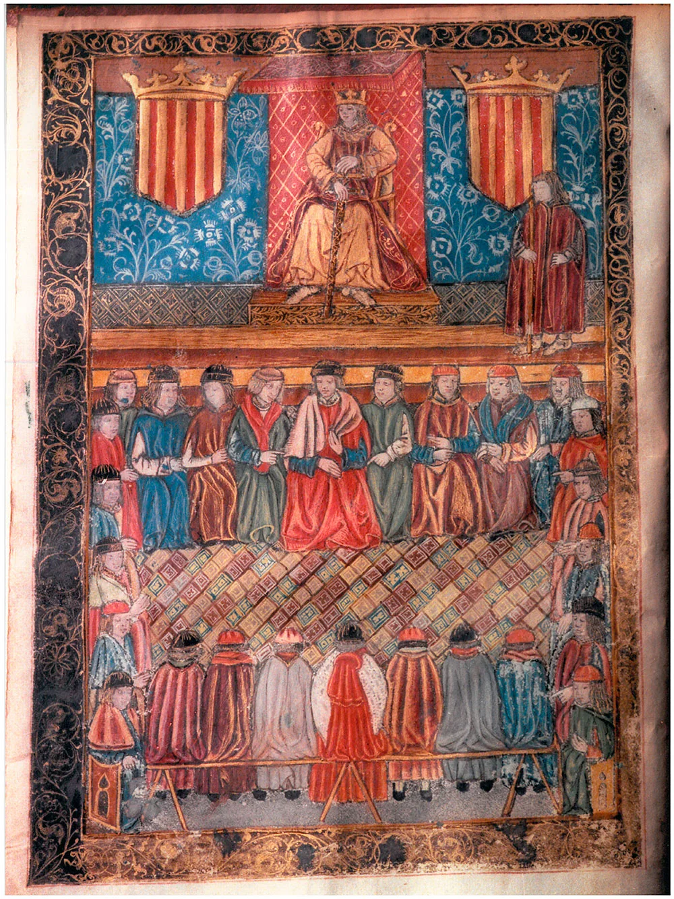
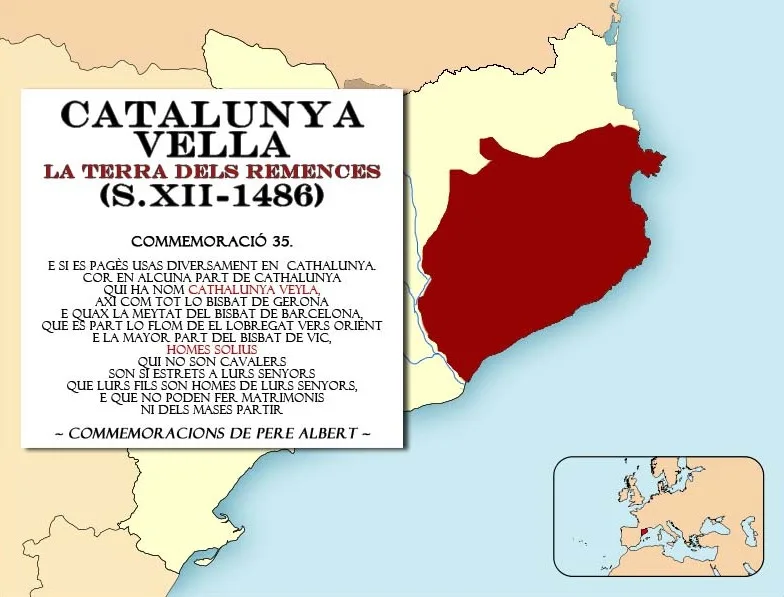
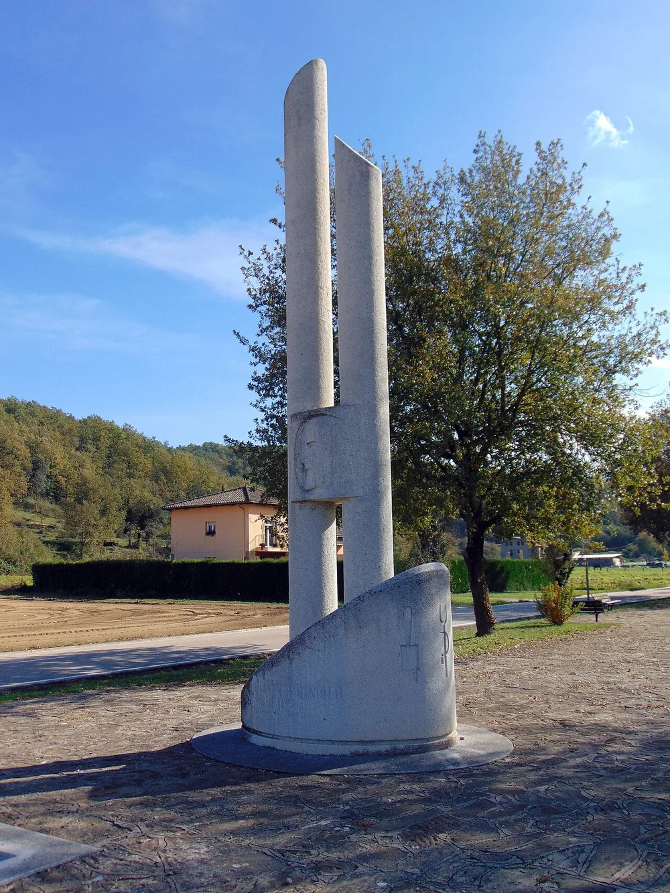
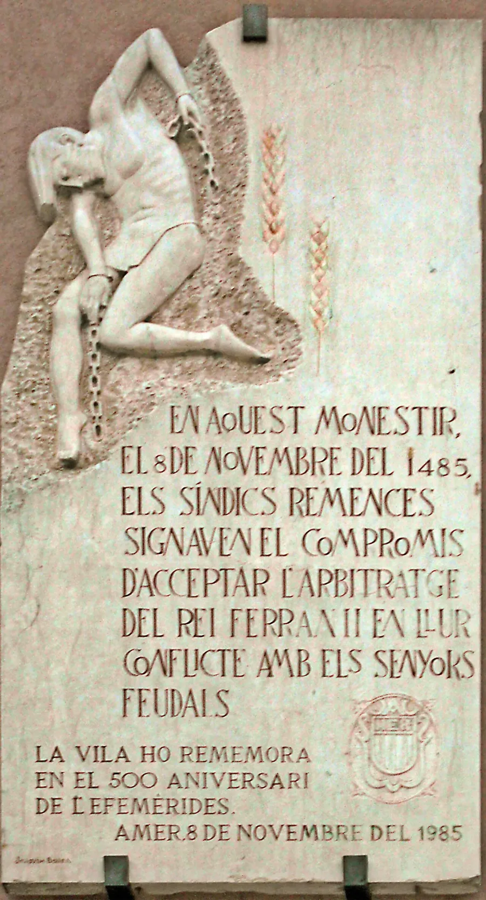
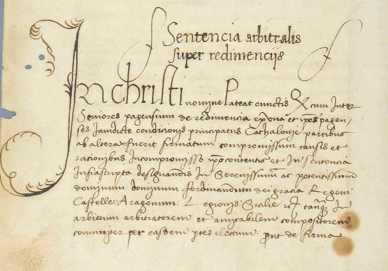

Qui té veu?
1Qui decideix aquí?
Marca qui decideix cada cosa a l'escola. A l'última columna, escriu qui la pren.
| Decisió | Decidim nosaltres | Ens pregunten | Decideixen per nosaltres | Qui la pren? |
|---|---|---|---|---|
| L'horari de les classes | ||||
| Les normes del mòbil | ||||
| Què es fa al pati | ||||
| La festa de final de curs | ||||
| Els deures i els exàmens | ||||
| Com es decora la classe |
2Text inicial
Respon sol/a i sense ajuda. No es puntua: el tornaràs a llegir l'últim dia.
Quan algú no té veu on es decideix el que l'afecta, què pot fer? És just desobeir?
3Qui hi ha a la sala? Font 1 · observo → dedueixo

1234Cort general del Principat de Catalunya. Constitucions de Catalunya (1495).
| # | Què hi veig? | Què en dedueixo? |
|---|---|---|
| 1 | ||
| 2 | ||
| 3 | ||
| 4 |
4Lligats al mas
5Els sis mals usos
6Acta del meu rol a les Corts Sessió 3
7Què va passar de debò?
 1348Pesta Negra
1348Pesta Negra
1448Neix el sindicat remença
1462Primera guerra remença
1485Segona guerra i Amer
1486Sentència de Guadalupe8Llibertat comprada?
Què va guanyar i què va perdre cada grup amb la Sentència de Guadalupe (1486)?
| Grup | Què hi guanya? | Què hi perd o què no canvia? |
|---|---|---|
| Pagesos de mas | ||
| Senyors | ||
| El rei | ||
| Jornalers sense terra | ||
| Dones remences |
9Memorial de greuges remença Sessió 4 · individual
Ets un pagès o una pagesa de remença l'any 1450. Escriu al rei. Fes servir una font d'aquest full com a prova.
10Memorial de greuges 2026 Sessions 5–7 · en grup
En grup. Una decisió de l'escola o del barri que us afecta i en què no teniu veu. Cada persona en guarda l'esborrany.
Abans d'entregar-lo, comproveu:
- El greuge és concret i afecta molta gent
- Hi ha almenys una prova
- La petició es pot complir
- Diem qui ens pot ajudar i a qui el presentem
- És respectuós
11Text final
Quan algú no té veu on es decideix el que l'afecta, què pot fer? És just desobeir?